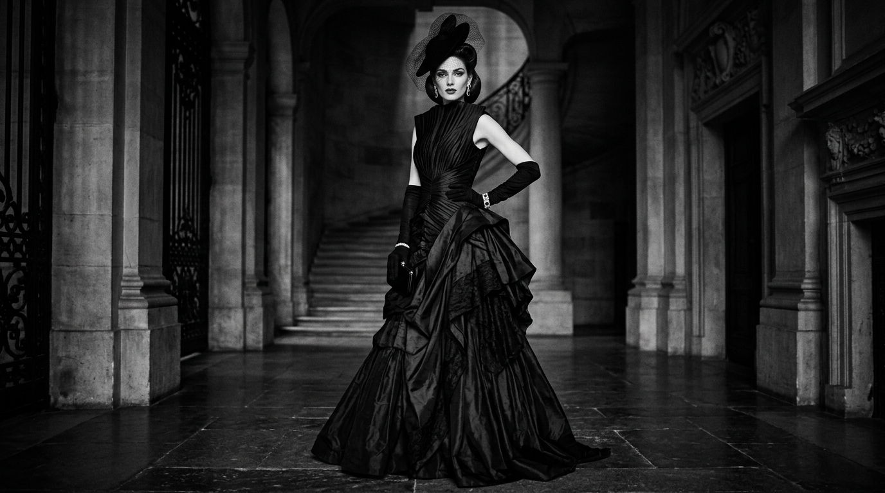

THE JOURNAL
Stories Beyond
Fashion

EDITORIAL
The Art Of
Monochrome
Exploring how restraint,
shadow, and silence define
modern luxury aesthetics.
PHILOSOPHY
Architecture
In Fashion
Tailoring inspired by
structure, proportion,
and emotional minimalism.
CULTURE
Why Quiet
Luxury Endures
A reflection on timeless
elegance in an era of noise
and fast-moving trends.